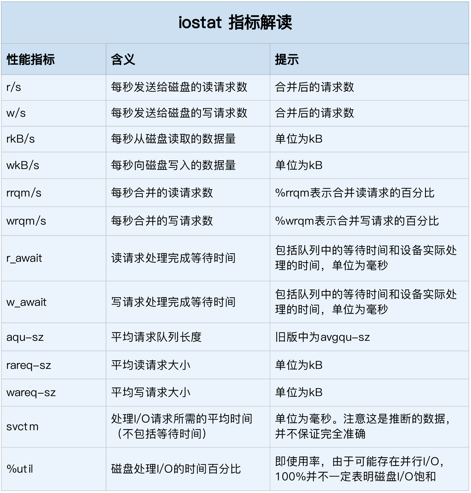

- 00 开篇词 别再让Linux性能问题成为你的绊脚石.md.html
- 01 如何学习Linux性能优化？.md.html
- 02 基础篇：到底应该怎么理解“平均负载”？.md.html
- 03 基础篇：经常说的 CPU 上下文切换是什么意思？（上）.md.html
- 04 基础篇：经常说的 CPU 上下文切换是什么意思？（下）.md.html
- 05 基础篇：某个应用的CPU使用率居然达到100%，我该怎么办？.md.html
- 06 案例篇：系统的 CPU 使用率很高，但为啥却找不到高 CPU 的应用？.md.html
- 07 案例篇：系统中出现大量不可中断进程和僵尸进程怎么办？（上）.md.html
- 08 案例篇：系统中出现大量不可中断进程和僵尸进程怎么办？（下）.md.html
- 09 基础篇：怎么理解Linux软中断？.md.html
- 10 案例篇：系统的软中断CPU使用率升高，我该怎么办？.md.html
- 11 套路篇：如何迅速分析出系统CPU的瓶颈在哪里？.md.html
- 12 套路篇：CPU 性能优化的几个思路.md.html
- 13 答疑（一）：无法模拟出 RES 中断的问题，怎么办？.md.html
- 14 答疑（二）：如何用perf工具分析Java程序？.md.html
- 15 基础篇：Linux内存是怎么工作的？.md.html
- 16 基础篇：怎么理解内存中的Buffer和Cache？.md.html
- 17 案例篇：如何利用系统缓存优化程序的运行效率？.md.html
- 18 案例篇：内存泄漏了，我该如何定位和处理？.md.html
- 19 案例篇：为什么系统的Swap变高了（上）.md.html
- 20 案例篇：为什么系统的Swap变高了？（下）.md.html
- 21 套路篇：如何“快准狠”找到系统内存的问题？.md.html
- 22 答疑（三）：文件系统与磁盘的区别是什么？.md.html
- 23 基础篇：Linux 文件系统是怎么工作的？.md.html
- 24 基础篇：Linux 磁盘I_O是怎么工作的（上）.md.html
- 25 基础篇：Linux 磁盘I_O是怎么工作的（下）.md.html
- 26 案例篇：如何找出狂打日志的“内鬼”？.md.html
- 27 案例篇：为什么我的磁盘I_O延迟很高？.md.html
- 28 案例篇：一个SQL查询要15秒，这是怎么回事？.md.html
- 29 案例篇：Redis响应严重延迟，如何解决？.md.html
- 30 套路篇：如何迅速分析出系统I_O的瓶颈在哪里？.md.html
- 31 套路篇：磁盘 I_O 性能优化的几个思路.md.html
- 32 答疑（四）：阻塞、非阻塞 I_O 与同步、异步 I_O 的区别和联系.md.html
- 33 关于 Linux 网络，你必须知道这些（上）.md.html
- 34 关于 Linux 网络，你必须知道这些（下）.md.html
- 35 基础篇：C10K 和 C1000K 回顾.md.html
- 36 套路篇：怎么评估系统的网络性能？.md.html
- 37 案例篇：DNS 解析时快时慢，我该怎么办？.md.html
- 38 案例篇：怎么使用 tcpdump 和 Wireshark 分析网络流量？.md.html
- 39 案例篇：怎么缓解 DDoS 攻击带来的性能下降问题？.md.html
- 40 案例篇：网络请求延迟变大了，我该怎么办？.md.html
- 41 案例篇：如何优化 NAT 性能？（上）.md.html
- 42 案例篇：如何优化 NAT 性能？（下）.md.html
- 43 套路篇：网络性能优化的几个思路（上）.md.html
- 44 套路篇：网络性能优化的几个思路（下）.md.html
- 45 答疑（五）：网络收发过程中，缓冲区位置在哪里？.md.html
- 46 案例篇：为什么应用容器化后，启动慢了很多？.md.html
- 47 案例篇：服务器总是时不时丢包，我该怎么办？（上）.md.html
- 48 案例篇：服务器总是时不时丢包，我该怎么办？（下）.md.html
- 49 案例篇：内核线程 CPU 利用率太高，我该怎么办？.md.html
- 50 案例篇：动态追踪怎么用？（上）.md.html
- 51 案例篇：动态追踪怎么用？（下）.md.html
- 52 案例篇：服务吞吐量下降很厉害，怎么分析？.md.html
- 53 套路篇：系统监控的综合思路.md.html
- 54 套路篇：应用监控的一般思路.md.html
- 55 套路篇：分析性能问题的一般步骤.md.html
- 56 套路篇：优化性能问题的一般方法.md.html
- 57 套路篇：Linux 性能工具速查.md.html
- 58 答疑（六）：容器冷启动如何性能分析？.md.html
- 加餐（一） 书单推荐：性能优化和Linux 系统原理.md.html
- 加餐（二） 书单推荐：网络原理和 Linux 内核实现.md.html
- 用户故事 “半路出家 ”，也要顺利拿下性能优化！.md.html
- 用户故事 运维和开发工程师们怎么说？.md.html
- 结束语 愿你攻克性能难关.md.html
- 捐赠
25 基础篇：Linux 磁盘I_O是怎么工作的（下）
你好，我是倪朋飞。
上一节我们学习了 Linux 磁盘 I/O 的工作原理，并了解了由文件系统层、通用块层和设备层构成的 Linux 存储系统 I/O 栈。
其中，通用块层是 Linux 磁盘 I/O 的核心。向上，它为文件系统和应用程序，提供访问了块设备的标准接口；向下，把各种异构的磁盘设备，抽象为统一的块设备，并会对文件系统和应用程序发来的 I/O 请求，进行重新排序、请求合并等，提高了磁盘访问的效率。
掌握了磁盘 I/O 的工作原理，你估计迫不及待想知道，怎么才能衡量磁盘的 I/O 性能。
接下来，我们就来看看，磁盘的性能指标，以及观测这些指标的方法。
磁盘性能指标
说到磁盘性能的衡量标准，必须要提到五个常见指标，也就是我们经常用到的，使用率、饱和度、IOPS、吞吐量以及响应时间等。这五个指标，是衡量磁盘性能的基本指标。
使用率，是指磁盘处理I/O的时间百分比。过高的使用率（比如超过80%），通常意味着磁盘 I/O 存在性能瓶颈。
饱和度，是指磁盘处理 I/O 的繁忙程度。过高的饱和度，意味着磁盘存在严重的性能瓶颈。当饱和度为 100% 时，磁盘无法接受新的 I/O 请求。
IOPS（Input/Output Per Second），是指每秒的 I/O 请求数。
吞吐量，是指每秒的 I/O 请求大小。
响应时间，是指 I/O 请求从发出到收到响应的间隔时间。
这里要注意的是，使用率只考虑有没有 I/O，而不考虑 I/O 的大小。换句话说，当使用率是 100% 的时候，磁盘依然有可能接受新的 I/O 请求。
这些指标，很可能是你经常挂在嘴边的，一讨论磁盘性能必定提起的对象。不过我还是要强调一点，不要孤立地去比较某一指标，而要结合读写比例、I/O类型（随机还是连续）以及 I/O 的大小，综合来分析。
举个例子，在数据库、大量小文件等这类随机读写比较多的场景中，IOPS 更能反映系统的整体性能；而在多媒体等顺序读写较多的场景中，吞吐量才更能反映系统的整体性能。
一般来说，我们在为应用程序的服务器选型时，要先对磁盘的 I/O 性能进行基准测试，以便可以准确评估，磁盘性能是否可以满足应用程序的需求。
这一方面，我推荐用性能测试工具 fio ，来测试磁盘的IOPS、吞吐量以及响应时间等核心指标。但还是那句话，因地制宜，灵活选取。在基准测试时，一定要注意根据应用程序 I/O 的特点，来具体评估指标。
当然，这就需要你测试出，不同 I/O 大小（一般是 512B 至 1MB 中间的若干值）分别在随机读、顺序读、随机写、顺序写等各种场景下的性能情况。
用性能工具得到的这些指标，可以作为后续分析应用程序性能的依据。一旦发生性能问题，你就可以把它们作为磁盘性能的极限值，进而评估磁盘 I/O 的使用情况。
了解磁盘的性能指标，只是我们I/O性能测试的第一步。接下来，又该用什么方法来观测它们呢？这里，我给你介绍几个常用的I/O性能观测方法。
磁盘I/O观测
第一个要观测的，是每块磁盘的使用情况。
iostat 是最常用的磁盘I/O性能观测工具，它提供了每个磁盘的使用率、IOPS、吞吐量等各种常见的性能指标，当然，这些指标实际上来自 /proc/diskstats。
iostat 的输出界面如下。
# -d -x表示显示所有磁盘I/O的指标
$ iostat -d -x 1
Device r/s w/s rkB/s wkB/s rrqm/s wrqm/s %rrqm %wrqm r_await w_await aqu-sz rareq-sz wareq-sz svctm %util
loop0 0.00 0.00 0.00 0.00 0.00 0.00 0.00 0.00 0.00 0.00 0.00 0.00 0.00 0.00 0.00
loop1 0.00 0.00 0.00 0.00 0.00 0.00 0.00 0.00 0.00 0.00 0.00 0.00 0.00 0.00 0.00
sda 0.00 0.00 0.00 0.00 0.00 0.00 0.00 0.00 0.00 0.00 0.00 0.00 0.00 0.00 0.00
sdb 0.00 0.00 0.00 0.00 0.00 0.00 0.00 0.00 0.00 0.00 0.00 0.00 0.00 0.00 0.00
从这里你可以看到，iostat 提供了非常丰富的性能指标。第一列的 Device 表示磁盘设备的名字，其他各列指标，虽然数量较多，但是每个指标的含义都很重要。为了方便你理解，我把它们总结成了一个表格。

这些指标中，你要注意：
%util ，就是我们前面提到的磁盘I/O使用率；
r/s+ w/s ，就是 IOPS；
rkB/s+wkB/s ，就是吞吐量；
r_await+w_await ，就是响应时间。
在观测指标时，也别忘了结合请求的大小（ rareq-sz 和wareq-sz）一起分析。
你可能注意到，从 iostat 并不能直接得到磁盘饱和度。事实上，饱和度通常也没有其他简单的观测方法，不过，你可以把观测到的，平均请求队列长度或者读写请求完成的等待时间，跟基准测试的结果（比如通过 fio）进行对比，综合评估磁盘的饱和情况。
进程I/O观测
除了每块磁盘的 I/O 情况，每个进程的 I/O 情况也是我们需要关注的重点。
上面提到的 iostat 只提供磁盘整体的 I/O 性能数据，缺点在于，并不能知道具体是哪些进程在进行磁盘读写。要观察进程的I/O情况，你还可以使用 pidstat 和 iotop 这两个工具。
pidstat 是我们的老朋友了，这里我就不再啰嗦它的功能了。给它加上 -d 参数，你就可以看到进程的I/O情况，如下所示：
$ pidstat -d 1
13:39:51 UID PID kB_rd/s kB_wr/s kB_ccwr/s iodelay Command
13:39:52 102 916 0.00 4.00 0.00 0 rsyslogd
从pidstat的输出你能看到，它可以实时查看每个进程的I/O情况，包括下面这些内容。
用户ID（UID）和进程ID（PID） 。
每秒读取的数据大小（kB_rd/s） ，单位是 KB。
每秒发出的写请求数据大小（kB_wr/s） ，单位是 KB。
每秒取消的写请求数据大小（kB_ccwr/s） ，单位是 KB。
块I/O延迟（iodelay），包括等待同步块I/O和换入块I/O结束的时间，单位是时钟周期。
除了可以用 pidstat 实时查看，根据 I/O 大小对进程排序，也是性能分析中一个常用的方法。这一点，我推荐另一个工具， iotop。它是一个类似于 top 的工具，你可以按照 I/O 大小对进程排序，然后找到I/O较大的那些进程。
iotop 的输出如下所示：
$ iotop
Total DISK READ : 0.00 B/s | Total DISK WRITE : 7.85 K/s
Actual DISK READ: 0.00 B/s | Actual DISK WRITE: 0.00 B/s
TID PRIO USER DISK READ DISK WRITE SWAPIN IO> COMMAND
15055 be/3 root 0.00 B/s 7.85 K/s 0.00 % 0.00 % systemd-journald
从这个输出，你可以看到，前两行分别表示，进程的磁盘读写大小总数和磁盘真实的读写大小总数。因为缓存、缓冲区、I/O合并等因素的影响，它们可能并不相等。
剩下的部分，则是从各个角度来分别表示进程的I/O情况，包括线程ID、I/O优先级、每秒读磁盘的大小、每秒写磁盘的大小、换入和等待I/O的时钟百分比等。
这两个工具，是我们分析磁盘 I/O 性能时最常用到的。你先了解它们的功能和指标含义，具体的使用方法，接下来的案例实战中我们一起学习。
小结
今天，我们梳理了 Linux 磁盘 I/O 的性能指标和性能工具。我们通常用IOPS、吞吐量、使用率、饱和度以及响应时间等几个指标，来评估磁盘的 I/O 性能。
你可以用 iostat 获得磁盘的 I/O 情况，也可以用 pidstat、iotop 等观察进程的 I/O 情况。不过在分析这些性能指标时，你要注意结合读写比例、I/O 类型以及 I/O 大小等，进行综合分析。
思考
最后，我想请你一起来聊聊，你碰到过的磁盘 I/O 问题。在碰到磁盘 I/O 性能问题时，你是怎么分析和定位的呢？你可以结合今天学到的磁盘 I/O 指标和工具，以及上一节学过的磁盘 I/O 原理，来总结你的思路。
欢迎在留言区和我讨论，也欢迎把这篇文章分享给你的同事、朋友。我们一起在实战中演练，在交流中进步。
© 2019 - 2023 Liangliang Lee. Powered by gin and hexo-theme-book.